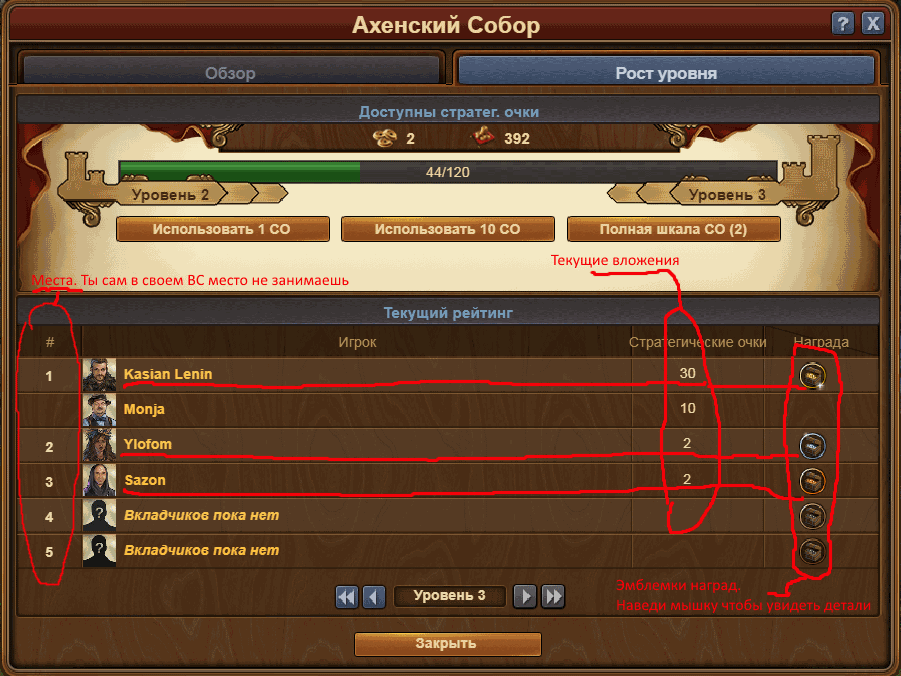

Начну с начала, а именно зачем вообще нужна ветка 1.9:
За вкладывание в ВС других игроков предусмотрена награда, определенное количество СО, медалек и чертежей,
но эта награда дается только за призовые места. Чем выше место - тем больше награда.
Еще есть такое ВС как Арка, это ВС увеличивает все вознаграждения для владельца за вкладывание в ВС других игроков.
На первом уровне только 10%, на 80 - 90%. после 80ур качать дорого, стандартом считается 80й.
Таким образом человек с 80й Аркой может вложить в твое ВС на любое место на 90% больше СО чем награда, и при этом не потеряет СО, а только получит медальки и чертежи.
|  |